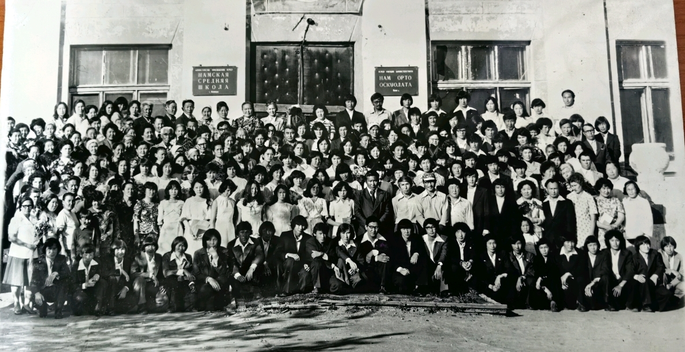
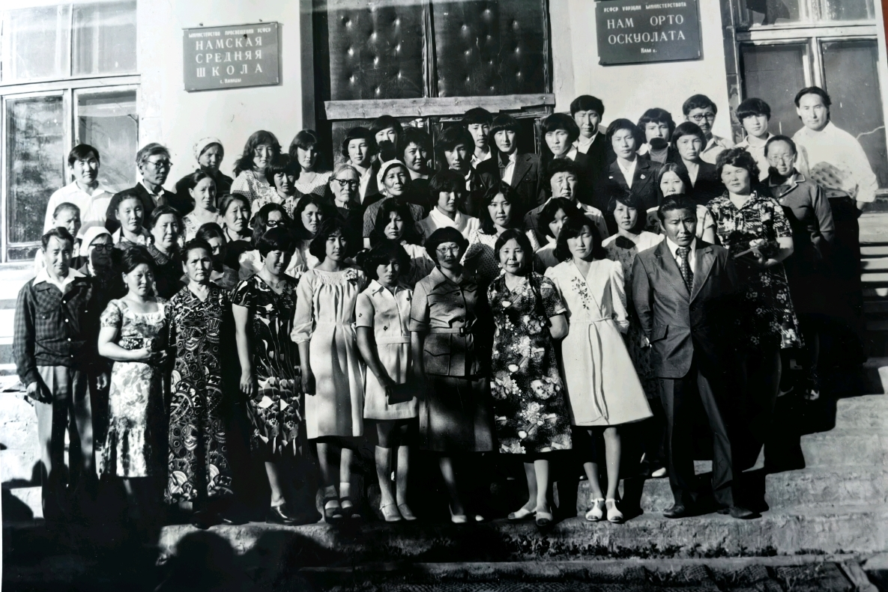

Добро пожаловать на памятный сайт выпускников 1979 года Намской средней школы села Нам, Намский район (Якутская АССР). Этот сайт создан для того, чтобы сохранить нашу общую школьную историю, имена руководителей и учителей, старые фотографии и тёплую связь между всеми пятью классами нашего выпуска.
Списки одноклассников постепенно дополняются и уточняются. Если вы узнали себя или одноклассников, хотите добавить новые имена, фотографии или воспоминания — пишите нам.
Выберите один из пяти классов выпуска 1979 года:
Список выпускников формируется и дополняется.
Список выпускников формируется и дополняется.
С благодарностью вспоминаем руководителя школы и наших наставников:
Руководитель Намской средней школы.
Воспоминания и слова благодарности дополняются.
Воспоминания и слова благодарности дополняются.
Памятные снимки школьных лет и встреч.


Воспоминания о встречах одноклассников разных лет и памятные даты:
Выпуск из Намской средней школы (5 классов).
Подробности, фотографии и воспоминания о встречах дополняются.
Мы помним ушедших учителей и одноклассников. Светлая им память.
Если вы хотите дополнить список одноклассников по любому из пяти классов, уточнить данные или добавить фотографии и воспоминания — напишите организатору сайта.
Ответственный за сайт: уточняется
Контакты: телефон / мессенджеры / эл. почта